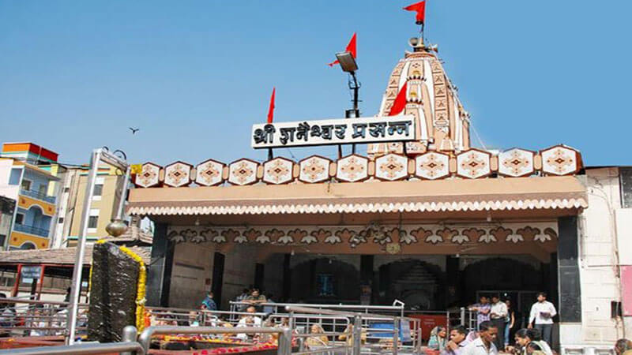
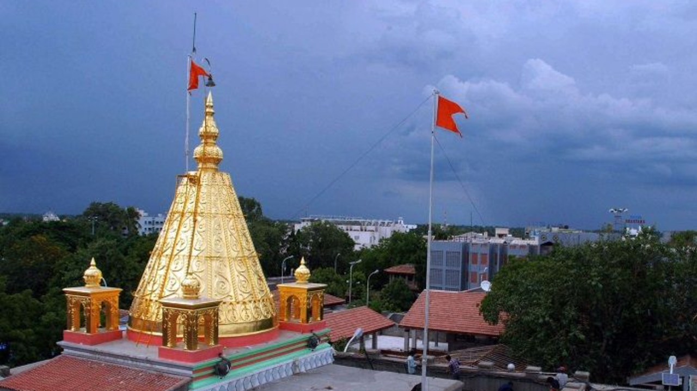

Temples and piligrimages in Maharashtra
Trimbakeshwar Shiva Temple (Nashik)
")
The Trimbakeshwar Shiva Temple, located 28–30 km from Nashik, Maharashtra, is a revered Hindu shrine housing one of the twelve Jyotirlingas. Built by Peshwa Balaji Bajirao in 1755, it features a unique three-faced linga representing Lord Shiva, Vishnu, and Brahma. Situated at the Brahmagiri hills' base, it is also the origin of the sacred Godavari River.
- Key Tourist Information:
- Location: Trimbak, ~28 km from Nashik, Maharashtra.
- Best Time to Visit: October to March (pleasant weather). Monsoon (June-September) offers scenic, lush views.
- Key Rituals: Famous for Kalsarpa Dosha, Narayan Nagbali, and Tripindi Vidhi pujas.
- Temple Timing: Daily morning puja (7:00 AM – 8:30 AM) and evening aarti (7:00 PM – 8:30 PM).
- Highlights: Ancient stone architecture, proximity to the Kushavart teerth (river source), and trekking opportunities at Brahmagiri.
- Food/Stay: Simple local food (Misal Pav) and ashrams (e.g., Annapurna Ashram) are available.
- Click here for information.
Siddhivinayak Temple

The Shree Siddhivinayak Ganapati Mandir in Prabhadevi, Mumbai, is a renowned 19th-century Hindu temple dedicated to Lord Ganesha, consecrated on November 19, 1801. Famous as the "wish-fulfiller," it features a distinct black stone idol with a right-tilted trunk and four hands (Chaturbhuj). It is a premier pilgrimage site, often visited by thousands daily
- Visitor Information & Tips:
- Best Time to Visit: Early mornings (5:30 AM – 10:00 AM) or weekdays to avoid heavy crowds.
- Darshan Options: Normal queue or a special/VIP line (approx. ₹50).
- Location: S.K. Bole Marg, Prabhadevi, Mumbai, 400028.
- Time Needed: Approximately 45 minutes to 1 hour.
- Nearby Attractions: Haji Ali Dargah (6 km), Marine Drive (5 km), Babulnath Temple (1.5 km).
- Transport: The nearest railway station is Dadar.
- Click here for more information.
Shani Shingnapur Temple

Shani Shingnapur, located in Maharashtra's Ahmednagar district, is a renowned pilgrimage site famous for its open-air Lord Shani temple and the unique tradition of houses having no doors or locks. Believing in divine protection, residents live without fear of theft. The shrine features a black stone idol representing Shani Dev.
- Key Tourist Information:
- Location: Sonai, Ahmednagar district, Maharashtra (approx. 35 km from Ahmednagar, 160 km from Pune).
- Temple Highlights: The deity is a 5-foot-high black stone set on an open-air platform, with no formal structure or roof.
- Best Time to Visit: Winter months (November to February) for pleasant weather. Saturdays are highly auspicious.
- Temple Timings: Typically open daily from 5:30 AM to 7:30 PM, with no general entry fee.
- Rituals: Devotees perform abhishek (pouring oil) on the idol, usually dressed in wet clothes after a bath.
- How to Reach: Well-connected by road from Aurangabad, Pune, and Shirdi (a common combined trip). Nearest railway stations are Ahmednagar and Sainagar Shirdi.
- Nearby Attractions: Often combined with trips to the Shirdi Sai Baba Temple (approx. 65 km away).
- Click here for more information.
Shirdi Sai Baba Temple

The Shirdi Sai Baba Temple, or Shree Samadhi Mandir, located in Ahmednagar district, Maharashtra, is a major pilgrimage site dedicated to the revered 19th-century spiritual leader Sai Baba. It houses his samadhi (tomb) and an iconic Italian marble idol, drawing millions of devotees yearly who honor his teachings of Shraddha (faith) and Saburi (patience).
- Key Tourist Information:
- Darshan Timing: 4:00 AM to 11:15 PM.
- Aarti Times: Kakad (Morning) 4:30 AM, Madhyan (Afternoon) 12:00 PM, Dhup (Evening) 6:30 PM, Shej (Night) 10:30 PM.
- Best Time to Visit: October to February (cool weather).
- Must-Visit Places:
- Samadhi Mandir: The main temple complex.
- Dwarkamai Masjid: The mosque where Sai Baba lived.
- Chavadi: Where Baba slept.
- Gurusthan: Where Baba was first seen.
- Sai Heritage Village: An eco-tourism spot.
- Shani Shingnapur: Nearby temple, about 60-70 km away.
- Click here for more information.